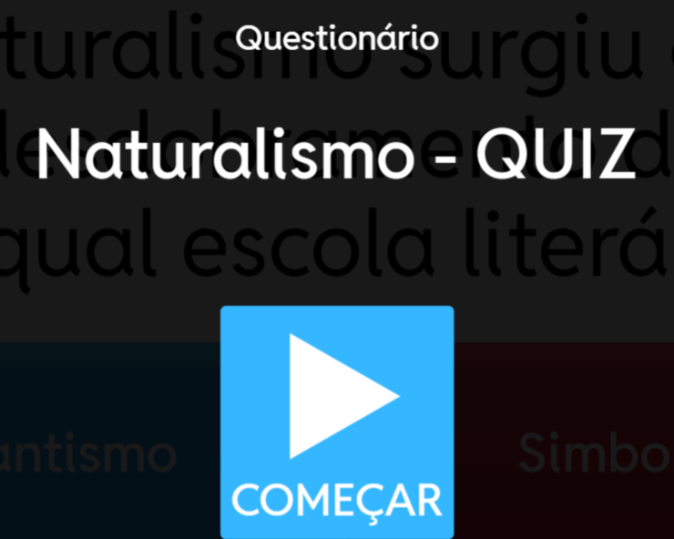
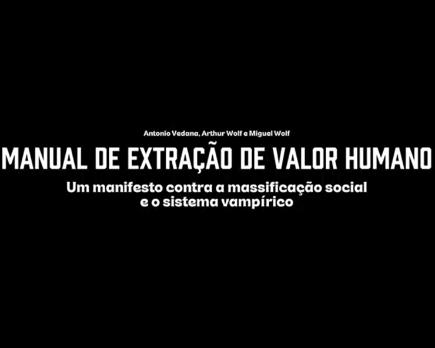
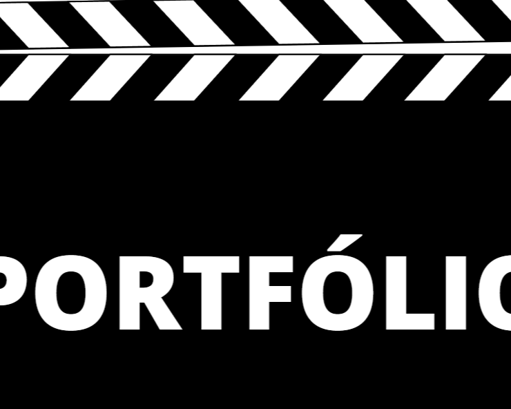
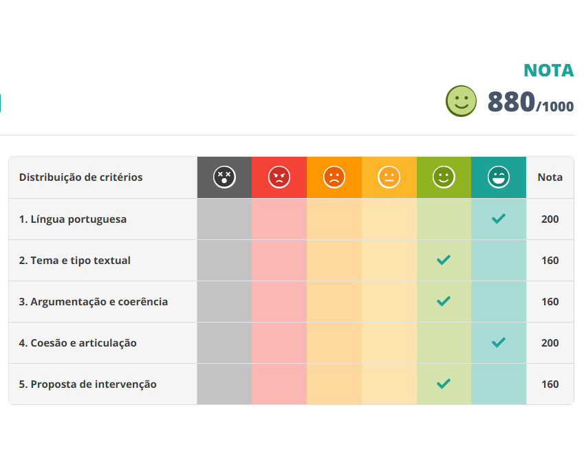

Linguagens
Terceiro Ano - Ensino Médio
A Filosofia em A Paixão de G.H.
Nesse trabalho, realizamos uma apresentação em grupo sobre um dos aspectos do livro 'A Paixão de G.H.', de Clarice Lispector. Nosso grupo optou por tratar sobre a filosofia na obra, conectando autores e seus conceitos com temas presentes no livro, bem como também buscamos apresentar quais movimentos filosóficos vigentes na época da publicação do livro serviram como influência para a autora. O trabalho foi muito interessante de ser realizado, em especial por conta da pluralidade de autores e perspectivas filosóficas que abordamos ao tratar sobre o livro.
H4, H22
H4 - Reconhecer a pluralidade de manifestações artísticas e culturais como forma de integração entre pessoas e entre diferentes grupos sociais e étnicos.
H22 - Produzir textos técnicos de acordo com uma estrutura estabelecida.

Game Literário - Naturalismo
Como forma de revisão dos conteúdos abordados em sala sobre as escolas literárias brasileiras, criamos um jogo de perguntas e respostas sobre os principais autores e movimentos literários do Naturalismo no Brasil. O jogo foi desenvolvido em grupo e ajudou a reforçar os conhecimentos adquiridos durante o estudo das diferentes correntes literárias. Após a apresentação do nosso jogo, também testamos os jogos de outros grupos, o que expandiu o valor da atividade ainda mais.
H4*, H14**, H15
H4 - Reconhecer a pluralidade de manifestações artísticas e culturais como forma de integração entre pessoas e entre diferentes grupos sociais e étnicos.
H15 - Produzir trabalhos individuais e coletivos, explorando materiais e técnicas ligados ao universo das composições artísticas e de práticas corporais.
*Adicionei tanto as habilidades 4 e 14 como a 15 por conta da divergência entre habilidades informadas no cartão atividade e no documento norteador do portfólio.
**H14 não tem descrição informada.

Videomanifesto
to-do
H3, H24
H3 - Identificar o tema principal, os subtemas e finalidades dos textos.
H24 - Produzir textos escritos de domínio acadêmico e educacional.

Que Tipo de Arte Você Consome?
to-do
H25
H25 - Interpretar textos em Língua Estrangeira Moderna (Inglês).

Red1000 - Segundo Trimestre
to-do
H22
H22 - Produzir textos técnicos de acordo com uma estrutura estabelecida.